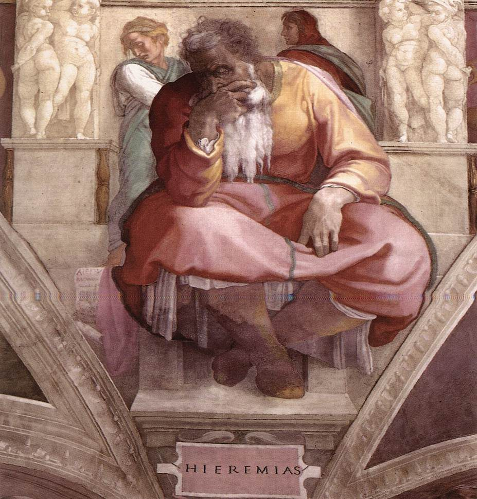

Jeremías 18 — La Traducción Mister

⚠ NO es la escena de este capítulo, y se coloca aquí como un marcador temporal, declarado honestamente como tal. El Jeremías de Miguel Ángel, en el techo de la Capilla Sixtina, es un estudio de carácter solitario — entre los más reproducidos y más melancólicos de sus siete profetas sixtinos, leído a menudo como el más introspectivo y agotado del conjunto, sentado en el extremo del techo más cercano al altar — no una narración que represente la casa del alfarero. La postura (una mano presionada contra la barba, los ojos bajos) se lee tradicionalmente como duelo introspectivo, lo contrario de la OBSERVACIÓN activa que este capítulo en verdad describe — Jeremías bajando a la casa del alfarero y observando el torno en funcionamiento. Se conserva aquí por su propia fama hasta que aparezca una representación real de esa escena.
{kind=link}
Dónde estamos. Jeremías es enviado fuera del barrio del palacio y abajo, a un taller. La dirección es literal: una alfarería necesita yacimientos de barro, agua y combustible, y un horno es un peligro de humo y fuego, así que el oficio se situaba en el borde bajo de la ciudad — el mismo barrio industrial al que vuelve en el capítulo siguiente, saliendo por la Puerta de los Tiestos hacia el valle de Ben-Hinom (19:2). Dos señales, un mismo mensaje. Este capítulo lleva además la cuarta de las cinco «confesiones» de Jeremías — las quejas privadas repartidas por los capítulos 11 al 20, que aquí afloran en los versículos 18–23; la quinta y más cruda es el capítulo 20, ya en estas páginas.
Las dos piedras. La palabra hebrea para aquello en lo que trabaja es ovnayim — no «rueda», sino un dual de even, «piedra»: literalmente las dos piedras. La palabra es una fotografía de la máquina: un torno de alfarero de esta época es un par — una piedra inferior girada con la mano o el pie que mueve una piedra superior sobre un pivote, con el barro encima. RV60 «estaba trabajando sobre la rueda»; NVI «en el torno». Hemos puesto llanamente las dos piedras, porque el número es la información. ⚠ El único otro lugar donde aparece ovnayim en la Biblia es Éxodo 1:16, donde es la silla de partos sobre la que se ponen las madres hebreas: una misma palabra dual para las dos piedras del alfarero y para las dos piedras del parto, y las dos son lugares donde a una vida se le da forma.
Dos verbos que conviene retener. Primero, la vasija se arruinó — nishchat, y ese es el verbo del diluvio: la tierra que «se corrompió» en Génesis 6:11-13. RV60 lo suaviza a «se echó a perder», que es lo que diría un artesano; el hebreo es más duro. Segundo, y fácil de pasar por alto: el alfarero volvió y la hizo de nuevo — shuv, el verbo del arrepentimiento en los profetas. El primer volverse de este capítulo no es el de la nación. Es el del alfarero.
Vuelve el encargo. Cuando Jeremías fue llamado, se le dieron seis verbos para el trabajo: arrancar y derribar, destruir y arruinar, edificar y plantar (1:10). Cinco de los seis están aquí de pie — arrancar, derribar y destruir en el versículo 7; edificar y plantar en el 9 — y hemos usado las mismas palabras españolas en ambos capítulos a propósito, para que el eco se oiga en vez de solamente afirmarse. Lo que era la descripción del puesto de un muchacho es ahora la regla con la que Dios mismo obra.
Arrepentirse. Nacham es una raíz que este sitio arrastra desde Génesis: la esperanza enterrada en el nombre de Noé (5:29) y, un capítulo después, el pesar de Dios por haber hecho al hombre (6:6). Aquí no es un nombre ni un estado de ánimo, sino una política declarada, dos veces. ⚠ En español «arrepentirse» sugiere culpa; el hebreo habla de una decisión que cambia, no de un pecado confesado.
Este es el gozne del capítulo, y corta en las dos direcciones. La imagen del alfarero se lee a menudo como pura soberanía: el barro no tiene voz. Pero el oráculo construido sobre ella es condicional, y la condición es del barro: si esa nación se vuelve… entonces me arrepiento (v 8). Nada está fijado todavía. ⚠ Y el versículo 10 es la misma maquinaria en sentido contrario: un bien prometido que se retira de una nación que deja de escuchar. Así que este no es un capítulo blando sobre segundas oportunidades; es un capítulo duro sobre un futuro que está realmente abierto, en ambas direcciones, hasta que deja de estarlo.
La metáfora se vuelve contra ellos. Cuatro veces se ha llamado al obrero ha-yotser, «el alfarero» (vv 2, 3, 4, 6). En el versículo 11 Dios usa la misma palabra de sí mismo, como participio, con otro objeto: heme aquí formando el mal contra vosotros. El alfarero sigue en el torno; lo que ahora está en el torno es esto. Y el verbo es yatsar, la misma raíz que formó al hombre del polvo en Génesis 2:7.
Cuatro designios. Chashav y su sustantivo machashavah recorren este capítulo cuatro veces, y la secuencia es la trama en miniatura: el mal que Dios pensó y puede dejar (v 8); el designio que Dios está pensando ahora (v 11); nuestros propios designios, que el pueblo prefiere (v 12); y por fin — siete versículos después — «pensemos designios contra Jeremías» (v 18). Dios piensa, el pueblo contrapiensa, y luego apuntan uno contra el hombre que se lo dijo. Hemos conservado una sola raíz española en los cuatro para que la cadena se sostenga.
Una sola palabra por respuesta. El versículo 12 abre con una única palabra hebrea, no’ash: RV60 «Es en vano»; NVI «De nada sirve»; NWT «¡Es inútil!». Hemos dejado el escueto Sin esperanza, porque el hebreo es una palabra llana y el efecto es un encogerse de hombros. ⚠ Nótese exactamente qué se rechaza. Dios acaba de decir que el resultado sigue abierto (v 8) y ha nombrado la salida: volveos… haced buenos vuestros caminos (v 11), el tercer volverse del capítulo. «Sin esperanza» no es un informe sobre su situación. Es un veredicto sobre la oferta, y está equivocado.
⚠ ¿Y cuáles eran las prácticas arraigadas? Este capítulo nunca lo dice. Su única acusación concreta es el versículo 15 — queman incienso «a la nada» — la abreviatura habitual de los profetas para un ídolo, sin nombrar dios alguno. El nombre viene de los capítulos vecinos: es Baal en 2:8, 19:5, 23:13 y 32:35, y el capítulo siguiente sitúa «los lugares altos de Baal» en el valle de Ben-Hinom, con niños quemados allí (19:5). La identificación es razonable, pero está tomada de los vecinos de este capítulo, no leída en él.
El versículo 14 es la frase más difícil del capítulo, y las versiones no coinciden. El hebreo es comprimido, y toda la dificultad está en una palabra, sadai, «campo», que encaja mal con una roca. Tres lecturas, con su pedigrí, y sin voto de nuestra parte: (1) algunas versiones suplen un sujeto humano — «¿dejará alguien la nieve del Líbano?»; (2) otras mantienen la nieve como sujeto — «¿falta la nieve del Líbano de la roca del campo?», y así lo hace RV60; (3) muchos editores modernos leen sadai como desliz por Sirión, el nombre sidonio del Hermón que da Deuteronomio 3:9 (ya en estas páginas), lo que produce un par limpio de montañas, y NVI suaviza en esa dirección con «sus laderas rocosas». ⚠ Esa tercera opción es una enmienda de las consonantes, no una traducción de ellas, y así debe etiquetarse dondequiera que se encuentre. El sentido sobrevive a las tres: la nieve no abandona el monte, y el arroyo frío no abandona su cauce. La naturaleza no deserta de su puesto. Mi pueblo sí.
La palabra que une las dos mitades. La segunda línea pregunta si las aguas frías son arrancadas — yinnateshu, que es el mismo verbo que Dios usó en el versículo 7 de lo que podría hacer a una nación. Hemos traducido los dos como arrancar, para que el lector vea la juntura: lo que Dios se reserva el derecho de hacer con reinos es lo que nunca le ocurre a un río.
El versículo 17, y un segundo problema genuino. Oref v’lo panim er’em son tres palabras y dos lecturas defendibles, porque el verbo puede vocalizarse como «yo veré» o como «yo les haré ver». RV60 toma la segunda — «les mostraré la espalda y no el rostro», Dios que se aparta — mientras la tradición judía toma la primera: «miraré su espalda, y no su rostro», Dios que los ve huir. Hemos seguido la primera, pero la otra está plenamente disponible en las consonantes. ⚠ En cualquier caso la línea está hecha para doler, porque es la bendición sacerdotal del revés: Jehová haga resplandecer su rostro sobre ti (Números 6:25, ya en estas páginas). Lo que se retira es el rostro.
El poder establecido responde, y responde institucionalmente. Los conspiradores nombran tres oficios y sus tres productos: la instrucción (torah) del sacerdote, el consejo del sabio, la palabra del profeta. Esa lista es todo el aparato de orientación de Judá, y la frase es una declaración de permanencia: esto no fallará, así que este hombre es prescindible. Es también, leída contra el capítulo, un argumento hecho justamente de la confianza a la que apuntaba la imagen del alfarero.
«Herirlo con la lengua». ⚠ El modismo es genuinamente ambiguo, y vale la pena conservar la ambigüedad: puede significar atacarlo hablando — la calumnia, la campaña de una ciudad que murmura — o golpearle la lengua, callar el órgano que causa el problema. Las dos lecturas están abiertas gramaticalmente; la segunda queda incómodamente cerca de lo que de hecho le ocurre en los capítulos siguientes.
El hoyo. Han «cavado un hoyo» para su vida (v 20), y aquí es una figura — la trampa de un cazador, junto con los lazos escondidos del versículo 22. No se queda en figura. En el capítulo 38 los oficiales bajarán a Jeremías con cuerdas a una cisterna de verdad, sin agua, y se hundirá en el lodo. ⚠ Y nótese qué alega en la misma frase: acuérdate de que estuve delante de ti… para apartar de ellos tu ira. Él había sido el que intercedía por esta ciudad — con tanta insistencia que Dios le había dicho dos veces que dejara de hacerlo (7:16; 14:11). «Pagar mal por bien» tampoco es una figura.
Digamos con claridad qué son estos tres versículos. Un profeta pide a Dios que haga morir de hambre a los hijos de sus vecinos, que enviude a sus mujeres y que sus jóvenes caigan en la batalla — y después pide a Dios que no los perdone. Es una de las oraciones imprecatorias, y hay una larga tradición de tratarla mirando a otro lado. No vamos a traducirla con suavidad esperando que nadie se dé cuenta.
Cuatro cosas ciertas al respecto, ninguna de ellas una excusa. Es una oración, no un programa: se lo pide a Dios en vez de organizarlo, y la distinción no es nada. Va después de un complot contra su vida — el versículo 23 dice que su consejo contra él es para muerte, y él lo sabe. La sentencia que pide es, casi palabra por palabra, la que ya se ha anunciado sobre Judá en este libro (hambre, espada), así que lo que en realidad ora es haz lo que dijiste. Y está colocada aquí por el propio editor del libro, inmediatamente después de que la oferta de misericordia fuera rechazada con un encogerse de hombros.
⚠ Y esta es la parte que no se debe alisar. Tres versículos antes alegaba su hoja de servicios como intercesor — estuve delante de ti… para apartar de ellos tu ira (v 20). Ahora pide que su culpa no sea cubierta y su pecado no sea borrado. Es el mismo hombre, en la misma página, pidiendo lo contrario de lo que pedía antes; el libro registra el derrumbe y no ofrece comentario editorial alguno. Quien conozca «Padre, perdónalos, porque no saben lo que hacen» oirá cuán lejos están las dos oraciones, y esa distancia es real. El trabajo de esta biblioteca es que puedas ver las dos, en las palabras que de hecho usaron sus autores, y no resolverlo en tu lugar.
Patrones que vale la pena recordar
Donde esta traducción va con la letra: «como el barro en la mano del alfarero, así sois vosotros en mi mano», conservado casi palabra por palabra porque no se puede mejorar; los cuatro designios mantenidos en una sola raíz española para que la cadena desde el plan de Dios hasta el complot contra Jeremías siga visible.
Donde va por su cuenta: las dos piedras por ovnayim (RV60 «la rueda», NVI «el torno») — el dual es la información, y es la misma palabra que la silla de partos de Éxodo; se arruinó por nishchat (RV60 «se echó a perder»), para que el verbo del diluvio siga oyéndose; el escueto Sin esperanza por la única palabra no’ash (RV60 «Es en vano», NWT «¡Es inútil!»); y arrancar usado tanto en el versículo 7 como en el 14, para que se vea que son un mismo verbo.
Ecos pagados y plantados. Pagados: el encargo de 1:10 — cinco de sus seis verbos otra vez en pie en los versículos 7 y 9; nishchat, el verbo de la ruina del diluvio (Génesis 6:11); nacham, la raíz del arrepentirse, desde la página de Noé (Génesis 5:29); yatsar, el verbo del alfarero que formó al hombre del polvo (Génesis 2:7), aquí vuelto para formar el mal contra vosotros (v 11); y el rostro resplandeciente de la bendición sacerdotal (Números 6:25, ya en estas páginas), invertido en el versículo 17. Plantados: la casa del alfarero y la Puerta de los Tiestos, que esperan un capítulo para una vasija ya cocida que no se puede remendar (19:11) — la física de las dos señales es todo el argumento; el hoyo cavado para su vida, que espera la cisterna real del capítulo 38; y la nada del versículo 15, cuyo dios sin nombre se nombra al lado: Baal.
⚠ Y algo que queda sin resolver a propósito. La «roca del campo» del versículo 14 y «la espalda y no el rostro» del versículo 17 son dos pasajes genuinamente disputados donde las consonantes admiten más de una lectura defendible. Las dos notas dan las lecturas con su pedigrí y ninguna emite un voto; la enmienda a Sirión se etiqueta como enmienda, que es lo que es.
Siguiente en este libro: Jeremías 19 — el mismo barro del alfarero, ahora cocido: una vasija comprada y rota en la Puerta de los Tiestos, sobre el valle de Ben-Hinom, donde estaban los lugares altos de Baal y se quemaban niños; el sermón que pone a Jeremías en el cepo en el capítulo 20, ya en estas páginas.